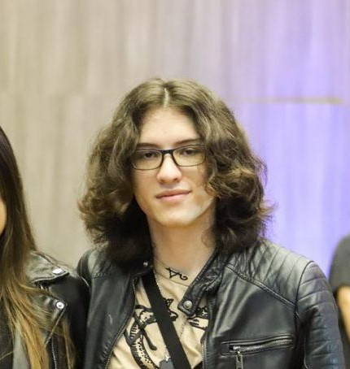

Bienvenid@s a: Un poco sobre mi
Información personal
- Nombre completo: Gabriel Alejandro Martinez Garcés
- Nacionalidad: Colombiano
- Recidencia: Barranquilla
- Estatura: 1.75 m
- Edad: 20
Estudios
- Bachillerato
Universidad
Segundo Idioma
Tecnólogo
Pasa tiempos
- Estudiar
- Ir al GYM
- Calistenia
- Videojuegos
- Hardware
Cosas Favoritas
- Comida: Espagueti
- Dulce: Helado
- Actividades: Paseos
- Juegos: Valorant
- Canción: Bugambilia
Mascotas
Puedes ir a Instagram para conocer a mi mascota: Instagram